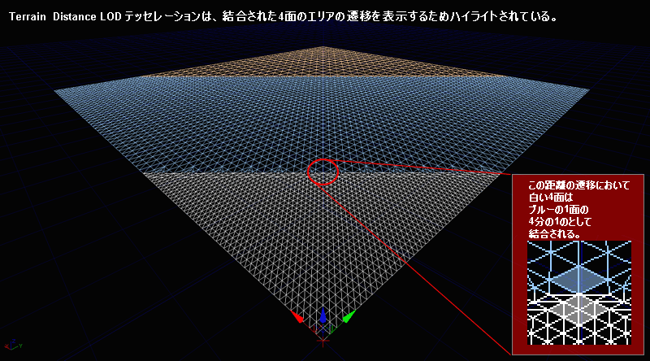
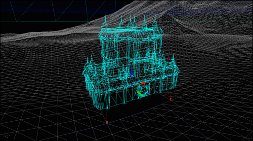

UDN
Search public documentation:
TerrainDesignJP
English Translation
中国翻译
한국어
Interested in the Unreal Engine?
Visit the Unreal Technology site.
Looking for jobs and company info?
Check out the Epic games site.
Questions about support via UDN?
Contact the UDN Staff
中国翻译
한국어
Interested in the Unreal Engine?
Visit the Unreal Technology site.
Looking for jobs and company info?
Check out the Epic games site.
Questions about support via UDN?
Contact the UDN Staff
テレイン デザイン : ガイドラインと情報
ドキュメント概要 : テレイン実装に関するガイドラインと情報。 ドキュメントの変更ログ : 原作者は David Green?。テレインの概観
Unreal Engine 3 は、広いバラエティのビジュアル スタイルや使用法を提供する、柔軟なテレイン システムをサポートしています。ビジュアル的に丘、谷、山、川、道などを描くことのできる heightmap に基づいたシステムは、さまざまな景色やテーマを実現し、達成することができます。また、マルチレイヤー Terrain Material (テレイン マテリアル) システムは、汚れ、石、砂、泥などの現実世界のテクスチャ ファイルをサポートします。草、雑草、茂み、花から小さな石やがれきなどのフォリッジをレンダリングすることで、マルチレイヤー Decoration システムは、さらなる柔軟性とリアリズムを提供します。 テレイン作成
テレインは通常、2 種類のうちの 1 つの技術を使用して作成されます。1 つは丘や谷を作成するのにテレイン メッシュに直接手描きをする方法で、もう 1 つは、外部で作成された テレイン heightmap をインポートする方法です。また、heightmap 情報は DEM (デジタル標高モデル) 情報から取得することもできます。泥、草、石を表すマテリアル レイヤーは、テクスチャがどこでテレインにブレンドするかを決定するテレイン アルファマップを使用して作成することができます。
テレインの使用とマップのレイアウト
テレインは、都市の区画、囲まれた中庭のような小さなエリアから、ガラクタの山に至るまでをシミュレートするのに使用されます。または、全体のゲーム マップは、山や谷などの地形的なさまざまな特徴を組み込む広い屋外のテレイン デザインに基づいていることもあります。
テレインは、特別にデザインされた大きな岩、ビュート、崖、水のプレーンといった地形的なメッシュとともに使用されることが多いです。付加的なメッシュは、テレインに現れるさまざまなフォリッジにも使用されます。テレインを使用したゲームのマップ デザインとレイアウトは、通常はテレインの機能を利用して、プレイヤーの動きを制限し、ゲーム マップの「世界」から飛び出したり落ちたりしないように、越えることのできない山や崖をプレイ エリアの周囲に作成します。
テレイン システムは原則的に、トライアングル メッシュの X*Y 配列をレンダリングします。それぞれのグリッド交差におけるこのトライアングルの高度は、頂点 Z の値によって決定されます。レベル デザイナーが直面する挑戦の 1 つには、ベストなビジュアル クオリティとパフォーマンス環境を提供するために、このテレイン メッシュの適切なレイアウトと解像度を選ぶことです。
テレイン作成
テレインは通常、2 種類のうちの 1 つの技術を使用して作成されます。1 つは丘や谷を作成するのにテレイン メッシュに直接手描きをする方法で、もう 1 つは、外部で作成された テレイン heightmap をインポートする方法です。また、heightmap 情報は DEM (デジタル標高モデル) 情報から取得することもできます。泥、草、石を表すマテリアル レイヤーは、テクスチャがどこでテレインにブレンドするかを決定するテレイン アルファマップを使用して作成することができます。
テレインの使用とマップのレイアウト
テレインは、都市の区画、囲まれた中庭のような小さなエリアから、ガラクタの山に至るまでをシミュレートするのに使用されます。または、全体のゲーム マップは、山や谷などの地形的なさまざまな特徴を組み込む広い屋外のテレイン デザインに基づいていることもあります。
テレインは、特別にデザインされた大きな岩、ビュート、崖、水のプレーンといった地形的なメッシュとともに使用されることが多いです。付加的なメッシュは、テレインに現れるさまざまなフォリッジにも使用されます。テレインを使用したゲームのマップ デザインとレイアウトは、通常はテレインの機能を利用して、プレイヤーの動きを制限し、ゲーム マップの「世界」から飛び出したり落ちたりしないように、越えることのできない山や崖をプレイ エリアの周囲に作成します。
テレイン システムは原則的に、トライアングル メッシュの X*Y 配列をレンダリングします。それぞれのグリッド交差におけるこのトライアングルの高度は、頂点 Z の値によって決定されます。レベル デザイナーが直面する挑戦の 1 つには、ベストなビジュアル クオリティとパフォーマンス環境を提供するために、このテレイン メッシュの適切なレイアウトと解像度を選ぶことです。
 テレイン サイズ
Unreal Engine 3 は、最大で 512k x 512k (524288 x 524288) Unreal ユニット のワールド サイズをサポートしています。これは、1 UU = 2cm (10km x 10km) のデフォルト エンジン ユニット変換を使用する約 10 平方キロメートルのエリアと同等です。実際のゲーム プレイ エリアは、通常これよりもずっと小さく、屋外テレイン ベース マップに関しては通常 1 平方キロメートル以下です。空の球体などの最大ワールド サイズの外に設置されたジオメトリはレンダリングされますが、「ワールド」ジオメトリはこの利用可能なエリアに限られます。
各テレイン パッチのサイズを指定する Terrain.NumPatches (例えば 128x128 や 256x256) や Display.DrawScale に設定されるテレイン heightmap XY 解像度は、最終的に最後のテレイン メッシュの総エリアを決定します。テレイン ディテールとレンダリング パフォーマンスのベストなバランスを得るには、もっとも効果的なパッチ サイズ値とパッチ数のセットを選ぶことが必要になります。
パフォーマンスとファイル サイズの両方の理由からして、1024x1024 パッチより大きいテレインを作成することは推奨されません。例えば、800 万個のトライアングルがある 2048x2048 のテレインは、エディタでの作業が遅くなり、結果として非常に大きなマップ ファイル サイズになります。大抵の場合、512x512 テレインを超えるだけでも特定の技術的問題が起こることがあるので、そこまで大きなテレインが適切な選択であるかどうかを、マップ デザインを検討し、考え直さなければいけないこともあります。
heightmap ビット深度
Unreal Engine テレイン システムにインポートするのに、外部のheightmap ファイルでマップを作成する際は、常に適切な 16 ビットのheightmap フォーマットとファイルで作業してください。標準的なペイント ソフトウェアのサポートの簡単さのため 8 ビットのグレースケール heightmap ファイルを選択すると、利用可能な高度範囲の 1/256 しか使用しないテレインになってしまいます。これは、通常好ましくない階段状の台地構造をテレインに与える原因となります。
外部 heightmap ファイルで作業する場合は、現在のビデオ ハードウェアで標準的なペイント ソフトウェアは 8 ビットのグレースケールのみしか編集/ディスプレイできないので、これを使用してディテールをheightmap にペイントすることは推奨されません。これは、8 ビット ディスプレイ システムにペイントされるすべての灰色にとって、視覚的に表示されない 256 のレベルの高度が実際にはあるということです。言い換えると、8 ビット グレースケール ディスプレイでは、0 の値 (黒) は実際は 0 から 255の中の 16 ビットの値、1 は 256 から 511 の間などということです。従ってペイントしている値に視覚的な正確さがないということです。
テレイン サイズ
Unreal Engine 3 は、最大で 512k x 512k (524288 x 524288) Unreal ユニット のワールド サイズをサポートしています。これは、1 UU = 2cm (10km x 10km) のデフォルト エンジン ユニット変換を使用する約 10 平方キロメートルのエリアと同等です。実際のゲーム プレイ エリアは、通常これよりもずっと小さく、屋外テレイン ベース マップに関しては通常 1 平方キロメートル以下です。空の球体などの最大ワールド サイズの外に設置されたジオメトリはレンダリングされますが、「ワールド」ジオメトリはこの利用可能なエリアに限られます。
各テレイン パッチのサイズを指定する Terrain.NumPatches (例えば 128x128 や 256x256) や Display.DrawScale に設定されるテレイン heightmap XY 解像度は、最終的に最後のテレイン メッシュの総エリアを決定します。テレイン ディテールとレンダリング パフォーマンスのベストなバランスを得るには、もっとも効果的なパッチ サイズ値とパッチ数のセットを選ぶことが必要になります。
パフォーマンスとファイル サイズの両方の理由からして、1024x1024 パッチより大きいテレインを作成することは推奨されません。例えば、800 万個のトライアングルがある 2048x2048 のテレインは、エディタでの作業が遅くなり、結果として非常に大きなマップ ファイル サイズになります。大抵の場合、512x512 テレインを超えるだけでも特定の技術的問題が起こることがあるので、そこまで大きなテレインが適切な選択であるかどうかを、マップ デザインを検討し、考え直さなければいけないこともあります。
heightmap ビット深度
Unreal Engine テレイン システムにインポートするのに、外部のheightmap ファイルでマップを作成する際は、常に適切な 16 ビットのheightmap フォーマットとファイルで作業してください。標準的なペイント ソフトウェアのサポートの簡単さのため 8 ビットのグレースケール heightmap ファイルを選択すると、利用可能な高度範囲の 1/256 しか使用しないテレインになってしまいます。これは、通常好ましくない階段状の台地構造をテレインに与える原因となります。
外部 heightmap ファイルで作業する場合は、現在のビデオ ハードウェアで標準的なペイント ソフトウェアは 8 ビットのグレースケールのみしか編集/ディスプレイできないので、これを使用してディテールをheightmap にペイントすることは推奨されません。これは、8 ビット ディスプレイ システムにペイントされるすべての灰色にとって、視覚的に表示されない 256 のレベルの高度が実際にはあるということです。言い換えると、8 ビット グレースケール ディスプレイでは、0 の値 (黒) は実際は 0 から 255の中の 16 ビットの値、1 は 256 から 511 の間などということです。従ってペイントしている値に視覚的な正確さがないということです。
 グリッドに留める
Terrain アクタの Advanced.bEdShouldSnap プロパティは、テレイン パッチがグリッド上に留まるように、常に TRUE にチェックされているべきです。これを 2 乗の Display.DrawScale や Display.DrawScale3D.X/.Y と組み合わせて使用することで、すべてのエッジでグリッドに適切にフィットするパッチになります。
Terrain アクタをマップに設置したら、Terrain アクタをロックして、エディタ内での不慮の移動を防ぐために、Advanced.bLockLocation を TRUE にチェックするようにしてください。
グリッドに留める
Terrain アクタの Advanced.bEdShouldSnap プロパティは、テレイン パッチがグリッド上に留まるように、常に TRUE にチェックされているべきです。これを 2 乗の Display.DrawScale や Display.DrawScale3D.X/.Y と組み合わせて使用することで、すべてのエッジでグリッドに適切にフィットするパッチになります。
Terrain アクタをマップに設置したら、Terrain アクタをロックして、エディタ内での不慮の移動を防ぐために、Advanced.bLockLocation を TRUE にチェックするようにしてください。
 2 乗
テレインやその他のゲーム アセットで作業をしていると、「2 乗」という言葉が頻繁に出てきます。2 乗の数は、2^n (n は 0 以上の数字) の式で求められる数のことです。2^0 = 1、2^1 = 2、2^2 = 4、2^3 = 8、2^4 = 16 などです。テレインに使用される一般的な 2 乗の数字は、1、2、4、8、16、32、64、128、256、512、1024 です。
2 乗
テレインやその他のゲーム アセットで作業をしていると、「2 乗」という言葉が頻繁に出てきます。2 乗の数は、2^n (n は 0 以上の数字) の式で求められる数のことです。2^0 = 1、2^1 = 2、2^2 = 4、2^3 = 8、2^4 = 16 などです。テレインに使用される一般的な 2 乗の数字は、1、2、4、8、16、32、64、128、256、512、1024 です。
パッチの数
Terrain アクタは、Terrain.NumPatchesX と Terrain.NumPatchesY の Terrain プロパティにより規定されているように、ユーザーにより定義可能なメッシュ パッチの数 (クワッド) をサポートします。これらの 2 つのプロパティは、テレイン メッシュの X と Y 次元のパッチの数を指定します。 パッチの数にテレイン DrawScale を掛けて、エディタ内でテレイン メッシュがカバーする総エリアを決定します。 NumPatches プロパティにサポートされる特定の値は、Terrain.MaxTesselationLevel と Terrain.MinTesselationLevel の値によって変わってきます。例えば、NumPatches が40 になるか 80 になるか、または 255 になるか 256 になるかさえも、TesselationLevel 値によるのです。
MaxTesselationLevel と MinTesselationLevel プロパティが両方とも 1 に設定されていれば、1 とサポートされている最大のサイズの間で、任意のテレイン サイズが指定されます。これは、41x79 といった変わったサイズのテレインの作成を可能にします。1 の TesselationLevel 値を使用することの難点は、錐台内のすべてのテレイン トライアングルは、動的距離 LOD テッセレーション最適化システムの使用をせずにレンダリングされることにあります。これは、小さなテレイン ピースに関しては許容範囲かも知れませんが、大きなテレイン システムでは、マップのレンダリングされたフレームレートに大きな影響を与えます。
注意 ： パフォーマンスとファイル サイズの両方の理由からして、1024x1024 パッチより大きいテレインを作成することは推奨されません。例えば、800 万個のトライアングルがある 2048x2048 のテレインは、エディタでの作業が遅くなり、結果として非常に大きなマップ ファイル サイズになります。大抵の場合、512x512 テレインを超えるだけでも特定の技術的問題が起こることがあるので、そこまで大きなテレインが適切な選択であるかどうかを、マップ デザインを検討し、考え直さなければいけないこともあります。
MinTesselationLevel プロパティは、通常デフォルト値である 1 に設定されているべきです。これが MaxTesselationLevel プロパティと同じ値に設定されていると、両方のプロパティを 1 に設定しているのと同じ結果になり、テッセレーションが起きません。MinTesselationLevel が MaxTesselationLevel の半分などの値に設定されていれば (例 : Min = 2、Max = 4)、テッセレーション エリアの数はより少なくなり、遠くの距離にあるテレインは増加した最適化クワッドを持たなくなります。言い換えると、Min:Max の比率が 1:4 だと、結果的に 2 つの最適化された距離のエリアになり、2:4 の比率だと 1 つになるということです。
Distance LOD 最適化システムを有効化するために MaxTesselationLevel が 1 以外の値に設定されていると、NumPatches によってサポートされる値は、複数の MaxTesselationLevel 値に制限されます。例えば、MaxTesselationLevel が 4 ならば、NumPatches は 4、8、12、16、20、24 などとなり、MaxTesselationLevel が 8 ならば、NumPatches は 8、16、24、32、40、48 などとなります。これは、テレイン サイズの選択肢を MaxTesselationLevel 値の倍数のみに制限しますが、動的距離 LOD テッセレーション最適化の使用が強く推奨されます。
NumPatches プロパティにサポートされる特定の値は、Terrain.MaxTesselationLevel と Terrain.MinTesselationLevel の値によって変わってきます。例えば、NumPatches が40 になるか 80 になるか、または 255 になるか 256 になるかさえも、TesselationLevel 値によるのです。
MaxTesselationLevel と MinTesselationLevel プロパティが両方とも 1 に設定されていれば、1 とサポートされている最大のサイズの間で、任意のテレイン サイズが指定されます。これは、41x79 といった変わったサイズのテレインの作成を可能にします。1 の TesselationLevel 値を使用することの難点は、錐台内のすべてのテレイン トライアングルは、動的距離 LOD テッセレーション最適化システムの使用をせずにレンダリングされることにあります。これは、小さなテレイン ピースに関しては許容範囲かも知れませんが、大きなテレイン システムでは、マップのレンダリングされたフレームレートに大きな影響を与えます。
注意 ： パフォーマンスとファイル サイズの両方の理由からして、1024x1024 パッチより大きいテレインを作成することは推奨されません。例えば、800 万個のトライアングルがある 2048x2048 のテレインは、エディタでの作業が遅くなり、結果として非常に大きなマップ ファイル サイズになります。大抵の場合、512x512 テレインを超えるだけでも特定の技術的問題が起こることがあるので、そこまで大きなテレインが適切な選択であるかどうかを、マップ デザインを検討し、考え直さなければいけないこともあります。
MinTesselationLevel プロパティは、通常デフォルト値である 1 に設定されているべきです。これが MaxTesselationLevel プロパティと同じ値に設定されていると、両方のプロパティを 1 に設定しているのと同じ結果になり、テッセレーションが起きません。MinTesselationLevel が MaxTesselationLevel の半分などの値に設定されていれば (例 : Min = 2、Max = 4)、テッセレーション エリアの数はより少なくなり、遠くの距離にあるテレインは増加した最適化クワッドを持たなくなります。言い換えると、Min:Max の比率が 1:4 だと、結果的に 2 つの最適化された距離のエリアになり、2:4 の比率だと 1 つになるということです。
Distance LOD 最適化システムを有効化するために MaxTesselationLevel が 1 以外の値に設定されていると、NumPatches によってサポートされる値は、複数の MaxTesselationLevel 値に制限されます。例えば、MaxTesselationLevel が 4 ならば、NumPatches は 4、8、12、16、20、24 などとなり、MaxTesselationLevel が 8 ならば、NumPatches は 8、16、24、32、40、48 などとなります。これは、テレイン サイズの選択肢を MaxTesselationLevel 値の倍数のみに制限しますが、動的距離 LOD テッセレーション最適化の使用が強く推奨されます。

DrawScale
DrawScale X と Y 各テレイン パッチのサイズは、Terrain アクタの Display.DrawScale と Display.DrawScale3D プロパティによって決定されます。これら 2 つの値のセットは、全体のテレイン パッチ サイズを決定するために掛けられます。言い換えると、1.0 の DrawScale と 256.0 の DrawScale3D は、256 Unreal ユニットのサイズになるということです (1.0 * 256.0)。2.0 の DrawScale と 512.0 の DrawScale3D は、1024 Unreal ユニットのサイズになります (2.0 * 512.0)。0.5 の DrawScale と 128.0 の DrawScale3D は、64 Unreal ユニットのサイズになります (0.5 * 128.0)。 DrawScale プロパティは、通常 1.0 のデフォルト値のままにしておくべきであり、DrawScale3D プロパティは、デフォルトの 256 以外のサイズにテレイン スケールを変更するために調節されるべきです。The DrawScale3D はテレイン メッシュの X、Y、Z 各方向の個々のプロパティを含みます。X と Y は、テレイン メッシュの幅と長さに影響を与え、Z はテレイン メッシュの高さ (高度範囲) に影響を与えます。 1 平方キロメートルなどの特定のエリアのテレインを作成するには、パッチの数と DrawScale に適切な値が選択されなければいけません。この数学的な方程式は以下のようになっています。 Unreal ユニット 内のテレイン エリア = ( NumPatchesX * ( DrawScale * DrawScale3D.X )) * ( NumPatchesY * ( DrawScale * DrawScale3D.Y )) 結果は Unreal ユニット で出てきますが、これは 1 Unreal ユニット = 2 センチメートルの換算率に従って、標準的な寸法に変換することができます。これは、デフォルトのエンジン スケール サイズです。エンジンを使用する異なったゲームは、デベロッパーによって設定された異なる換算スケールを使用する場合もあります。 DrawScale の選択された値のセットは、希望されるテレイン ディテール クオリティと希望されるレンダリング パフォーマンスの 2 つの要因に左右されます。大きなテレイン ディテールは、より小さい DrawScale を必要とし、結果的に特定のテレイン エリアでのパッチの数は多くなります。速いレンダリングは、より大きい DrawScale を必要とし、特定のテレイン エリアでのパッチの数は少なくなります。 大まかに言うと、囲まれた中庭のような小さなテレインでは、DrawScale3D.X/Y は 32 から 128 の間で、64 がもっとも一般的です。完全な屋外のエリアなどの大きいテレイン エリアに関しては、DrawScale3D.X/Y は 128 と 512 の間で、256 がもっとも一般的と言えます。 DrawScale Z
DrawScale3D.Z プロパティは、Z 方向 (上下) に沿った各テレイン メッシュ頂点位置の_グラニュラリティ_を決定します。DrawScale3D.Z 値が低ければ低いほど、高度の段はきめ細かくなります。DrawScale3D.Z 値が高ければ高いほど、高度の段は粗くなります。トータルで 65536 高度値のみしかないので、DrawScale3D.Z はテレインの総高度範囲も決定します。
以下は DrawScale3D.Z に関する付属的な情報です。
DrawScale Z
DrawScale3D.Z プロパティは、Z 方向 (上下) に沿った各テレイン メッシュ頂点位置の_グラニュラリティ_を決定します。DrawScale3D.Z 値が低ければ低いほど、高度の段はきめ細かくなります。DrawScale3D.Z 値が高ければ高いほど、高度の段は粗くなります。トータルで 65536 高度値のみしかないので、DrawScale3D.Z はテレインの総高度範囲も決定します。
以下は DrawScale3D.Z に関する付属的な情報です。
テレイン パッチ サイズ エリア
各テレイン パッチのサイズ (クワッド) は、Display.DrawScale と Display.DrawScale3D プロパティによって決定されます。この表は、デフォルトの Unreal Engine 測定比率である 1 Unreal ユニット = 2 センチメートルに基づいたフィートとメートルでの概算サイズを表しています。測定基準の変換法は 1 インチ = 2.54 cm となっています。| DrawScale | UU でのパッチ | メートルでのパッチ | フィートでのパッチ |
|---|---|---|---|
| 64 | 64 uus | 1.28m (128cm) | 4.2ft (50.39 in) |
| 80 | 80 uus | 1.60m (160cm) | 5.25ft (62.99 in) |
| 96 | 96 uus | 1.92m (192cm) | 6.3ft (75.59 in) |
| 112 | 112 uus | 2.24m (224cm) | 7.35ft (88.19 in) |
| 128 | 128 uus | 2.56m (256cm) | 8.4ft (100.79 in) |
| 160 | 160 uus | 3.20m (320cm) | 10.5ft (125.98 in) |
| 192 | 192 uus | 3.84m (384cm) | 12.6ft (151.18 in) |
| 224 | 224 uus | 4.48m (448cm) | 14.7ft (176.38 in) |
| 256 | 256 uus | 5.12m (512cm) | 16.8ft (201.57 in) |
| 288 | 288 uus | 5.76m (576cm) | 18.9ft (226.77 in) |
| 320 | 320 uus | 6.40m (640cm) | 21ft (251.97 in) |
| 352 | 352 uus | 7.04m (704cm) | 23.1ft (277.17 in) |
| 384 | 384 uus | 7.68m (768cm) | 25.2ft (302.36 in) |
| 512 | 512 uus | 10.24m (1024cm) | 33.6ft (403.15 in) |
テレイン サイズとマップ ファイル サイズ
テレインの総サイズ、テクスチャ レイヤーの数や、ライトマップ解像度などのその他のテレイン プロパティは、マップ ファイル サイズに追加されるリソースの量を決定します。大きいテレインは、大量のメガバイトをマップ ファイルに素早く追加します。 この表は、以下のようにセットアップされたレベルのファイル サイズのリストになります。- Terrain アクタと 1 つの方向性ライトを持つ空のマップ
- テレイン レイヤーなしのマップ
- クックされていないマップ
| heightmap | トライアングル | ファイル サイズ |
|---|---|---|
| 64x64 | 8,192 | 125kb |
| 128x128 | 32,768 | 3.2MB |
| 256x256 | 131,072 | 7.2MB |
| 512x512 | 524,288 | 28.7MB |
| 1024x1024 | 2,097,152 | 110MB |
- Terrain アクタと 1 つの方向性ライトを持つ空のマップ
- 1 つの 1024x1024 テクスチャ、1 つのマテリアル、1 つの TerrainMaterial、1 つの TerrainLayerSetup を持つマップ
- クックされていないマップ
| heightmap | トライアングル | ファイル サイズ |
|---|---|---|
| 64x64 | 8,192 | 4MB |
| 128x128 | 32,768 | 6.38MB |
| 256x256 | 131,072 | 10.6MB |
| 512x512 | 524,288 | 32.9MB |
| 1024x1024 | 2,097,152 | 118MB |
テレイン サイズとマップ エリア
この表は、一般的なパッチ数と DrawScale に対するテレインの現実世界に相当するサイズをリストしています。 テレイン サイズは NumPatches * ( DrawScale * DrawScale3D ) = Unreal ユニット として計算されています。 1 Unreal ユニット = 2 cm。1 フィート = 30.48 cm または 0.3048 m。1 m = 3.280839895 フィート。1000 m = 1 km。5280 フィート = 1 マイル。 テレインの希望される総エリアを決定するには、この表のメートル/キロメートル、またはフィート/マイルから幅と長さを探し、必要とされる NumPatches と DrawScale を引き出します。| NumPatches | DrawScale | Unreal ユニットでの長さ | メートル | フィート |
|---|---|---|---|---|
| 64 | 64 | 4096 uus | 81.92 m | 268.77 ft |
| 64 | 96 | 6144 uus | 122.88 m | 403.15 ft |
| 64 | 128 | 8192 uus | 163.84 m | 537.53 ft |
| 64 | 192 | 12288 uus | 245.76 m | 806.3 ft |
| 64 | 256 | 16384 uus | 327.68 m | 1074.97 ft |
| 64 | 384 | 24576 uus | 491.52 m | 1612.6 ft |
| 64 | 512 | 32768 uus | 655.36 m | 2150.13 ft |
| 128 | 64 | 8192 uus | 163.84 m | 537.53 ft |
| 128 | 96 | 12288 uus | 245.76 m | 806.3 ft |
| 128 | 128 | 16384 uus | 327.68 m | 1074.97 ft |
| 128 | 192 | 24576 uus | 491.52 m | 1612.6 ft |
| 128 | 256 | 32768 uus | 655.36 m | 2150.13 ft |
| 128 | 384 | 49152 uus | 983.04 m | 3225.2 ft |
| 128 | 512 | 65536 uus | 1.3km (1310.72 m) | 4300.26 ft |
| 256 | 64 | 16384 uus | 327.68 m | 1074.97 ft |
| 256 | 96 | 24576 uus | 491.52 m | 1612.6 ft |
| 256 | 128 | 32768 uus | 655.36 m | 2150.13 ft |
| 256 | 192 | 49152 uus | 983.04 m | 3225.2 ft |
| 256 | 256 | 65536 uus | 1.3km (1310.72 m) | 4300.26 ft |
| 256 | 384 | 98304 uus | 1.97km (1966.08 m) | 1.22 miles (6450.39 ft) |
| 256 | 512 | 131072 uus | 2.6km (2621.44 m) | 1.63 miles (8600.52 ft) |
| 512 | 64 | 32768 uus | 655.36 m | 2150.13 ft |
| 512 | 96 | 49152 uus | 983.04 m | 3225.2 ft |
| 512 | 128 | 65536 uus | 1.31km (1310.72 m) | 4300.26 ft |
| 512 | 192 | 98304 uus | 1.97km (1966.08 m) | 1.22 miles (6450.39 ft) |
| 512 | 256 | 131072 uus | 2.62km (2621.44 m) | 1.63 miles (8600.52 ft) |
| 512 | 384 | 196608 uus | 3.93km (3932.16 m) | 2.44 miles (12900.79 ft) |
| 512 | 512 | 262144 uus | 5.24km (5242.88 m) | 3.26 miles (17201.05 ft) |
| 1024 | 64 | 65536 uus | 1.31km (1310.72 m) | 4300.26 ft |
| 1024 | 96 | 98304 uus | 1.97km (1966.08 m) | 1.22 miles (6450.39 ft) |
| 1024 | 128 | 131072 uus | 2.62km (2621.44 m) | 1.63 miles (8600.52 ft) |
| 1024 | 192 | 196608 uus | 3.93km (3932.16 m) | 2.44 miles (12900.79 ft) |
| 1024 | 256 | 262144 uus | 5.24km (5242.88 m) | 3.26 miles (17201.05 ft) |
| 1024 | 384 | 393216 uus | 7.86km (7864.32 m) | 4.89 miles (25801.57 ft) |
| 1024 | 512 | 524288 uus | 10.49km (10485.76 m) | 6.52 miles (34402.1 ft) |
テレインの最適化
Unreal Engine には、使用目的に対するベストなサイズを選択するのに加えて、テレインを最適化する機能がたくさんあります。- 256 と 512 の間の DrawScale XY 値を使用します。128 よりも低い値は、密なテレイン メッシュを作成し、多くのレンダリング パワーが必要となるので、値はできれば 128 より低くないほうが良いでしょう。
- Terrain.MinTesselationLevel を 1 に、Terrain.MaxTesselationLevel を 4 に設定することで、上手にビルトインの距離 LOD テッセレーション機能を利用します。テッセレーション機能を無効化すると、通常錐台でよりたくさんのテレイン トライアングルがレンダリングされてしまい、より多くのレンダリング パワーが必要となります。
- テレインに適用するマテリアルの数を制限しましょう。マテリアル セットアップが少なく、単純であるほど、レンダリングが速くなります。
- 決して見えないテレイン トライアングルや、CSG ブラシや StaticMesh オブジェクトなどの他のジオメトリやアセットの下にあるテレイン トライアングルを非表示にします。これは、Visibility Tool (可視性ツール) でテレインを編集して、非表示にしたいパッチをクリックすることで可能です。非表示に設定されているテレイン エリアは、十分大きくないと、価値がある大幅なパフォーマンス増加につながりません。言い換えると、各木箱、樽、木などの下の 1 つのパッチを隠しても意味がありません。
DrawScale XY と沈むマップ アセット
上で解説したように、Terrain アクタの Advanced.bEdShouldSnap プロパティは、テレイン パッチがグリッド上に留まるように、常に TRUE にチェックされているべきです。これを 2 乗の Display.DrawScale や Display.DrawScale3D.X/.Y と組み合わせて使用することで、すべてのエッジでグリッドに適切にフィットするパッチになります。可視性の編集やアセットのテレインへの沈みは、各パッチ クワッドが四角い場合、単純化されるので、大抵の場合、テレイン パッチは、X と Y の四角形の縦横比を使用します。 なぜテレイン メッシュ XY が重要か テレイン DrawScale XY は、テレイン メッシュ内の各パッチのサイズを決定します。このサイズはまた、特定の頂点高度差におけるテレイン パッチの最大傾斜度を決定します。小さい DrawScale XY サイズは、急な傾斜になり、急勾配の崖を含むテレインなどに必要になります。 CSG (Constructive Solid Geometry (構成立体表現)) や静的メッシュなどのアセットをマップ内で使用するために作成する際、すべてのアセットが 2 乗のグリッド スペーシングにフィットするようにそれらをスケールするのが、一般的となっています。テレイン パッチも 2 乗のサイズにスケールされるとしたら、静的メッシュ建物のようなテレインに沈むアセットはきれいにテレイン パッチのエッジと並べることができます。また、沈んだアセットの中や下にある見えないテレイン パッチは、”Terrain Visibility Tool (テレイン可視性ツール)” を使用して、パフォーマンス増加をはかることが可能です。建物などのアセットに内部がある場合は、建物内でのプレイヤーの移動に干渉しないように、建物の中のテレインのパッチは非表示にされなければいけません。
CSG (Constructive Solid Geometry (構成立体表現)) や静的メッシュなどのアセットをマップ内で使用するために作成する際、すべてのアセットが 2 乗のグリッド スペーシングにフィットするようにそれらをスケールするのが、一般的となっています。テレイン パッチも 2 乗のサイズにスケールされるとしたら、静的メッシュ建物のようなテレインに沈むアセットはきれいにテレイン パッチのエッジと並べることができます。また、沈んだアセットの中や下にある見えないテレイン パッチは、”Terrain Visibility Tool (テレイン可視性ツール)” を使用して、パフォーマンス増加をはかることが可能です。建物などのアセットに内部がある場合は、建物内でのプレイヤーの移動に干渉しないように、建物の中のテレインのパッチは非表示にされなければいけません。

DrawScale Z と高度範囲
Display.DrawScale3D.Z プロパティは、Z 方向で行われるスケーリングの量を指定します。これは、テレイン頂点―同様にトライアングル―が届くことのできるような全体の高度範囲を決定します。新しいテレインを作成する際は、DrawScale3D.Z をデフォルトの 256 よりも低い値にへんこうすることが推奨されます。64 と 128 の間の値が良いでしょう。 なぜ Z が重要か DrawScale3D.Z 値は、2 つのエリアで大きな重要性を持っています。この値は、テレインが拡張することができる最大の高度範囲と、ペインティングに関連する vertex Z ロケーションの_グラニュラリティ_を決定します。小さい DrawScale Z 値は、頂点高度のきめ細かいコントロールを可能にします。例えば、以下の表の情報を参照すると、DrawScale3D.Z 値が 2048 だと、頂点の高度は 32 cm ごと、または約 1 フィートごとにしか調節できないことになります。テレインが建物のエッジや、その他の挿入されたアセットの周りで調節される場合、1 フィートの移動は大幅な影響を与えるものであり、きめ細かいコントロールが必要になってきます。 高度範囲
以下の表は、一般的な DrawScale3D.Z 値と、最低から最高heightmap 値でそれがサポートする相当の最大高度範囲 (0 または黒が最も低い G16 高度で、65535 または白がもっとも高い G16 高度です) をリストしています。実際に使用する際は、DrawScale3D.Z 値が 64 より大きくなることは滅多にありません。外部の G16 heightmap ファイルがインポートされ、64 から 128 以上の DrawScale3D.Z を必要とする場合、heightmap は変更されるべきです。こうすることで、利用可能な 16 ビット範囲を使用し、いかなる編集のグラニュラリティもきめ細かくなり、ペインティング中の頂点移動もきめ細かくなります。
実際の比率は、1 Display.DrawScale3D.Z ユニット = heightmap の総高度範囲の 512 Unreal ユニット で 1:512 となります。
従って、希望する総 Unreal ユニット 高度範囲を 512 で割ると、使用するべき DrawScale3D.Z が出てきます。
段ごとの UU は、最大高度範囲を 65536 の 16 ビット heightmap 範囲を割って出します。
1 Unreal ユニット = 2 cm。1 フィート = 30.48 cm または 0.3048 m。1 m = 3.280839895 フィート。1000 m = 1 km。5280 フィート = 1 マイル。
高度範囲
以下の表は、一般的な DrawScale3D.Z 値と、最低から最高heightmap 値でそれがサポートする相当の最大高度範囲 (0 または黒が最も低い G16 高度で、65535 または白がもっとも高い G16 高度です) をリストしています。実際に使用する際は、DrawScale3D.Z 値が 64 より大きくなることは滅多にありません。外部の G16 heightmap ファイルがインポートされ、64 から 128 以上の DrawScale3D.Z を必要とする場合、heightmap は変更されるべきです。こうすることで、利用可能な 16 ビット範囲を使用し、いかなる編集のグラニュラリティもきめ細かくなり、ペインティング中の頂点移動もきめ細かくなります。
実際の比率は、1 Display.DrawScale3D.Z ユニット = heightmap の総高度範囲の 512 Unreal ユニット で 1:512 となります。
従って、希望する総 Unreal ユニット 高度範囲を 512 で割ると、使用するべき DrawScale3D.Z が出てきます。
段ごとの UU は、最大高度範囲を 65536 の 16 ビット heightmap 範囲を割って出します。
1 Unreal ユニット = 2 cm。1 フィート = 30.48 cm または 0.3048 m。1 m = 3.280839895 フィート。1000 m = 1 km。5280 フィート = 1 マイル。| DrawScale3D.Z | 最大高度 | UU/段 | メートルでの範囲 | mm/段 | フィートでの範囲 | in/段 |
|---|---|---|---|---|---|---|
| 1 | 512 uus | 0.0078125 | 10.24 m | 0.15625 | 33.6 ft | 0.00615" |
| 2 | 1024 uus | 0.015625 | 20.48 m | 0.3125 | 67.19 ft | 0.0123" |
| 4 | 2048 uus | 0.03125 | 40.96 m | 0.625 | 134.38 ft | 0.0246" |
| 8 | 4096 uus | 0.0625 | 81.92 m | 1.25 | 268.77 ft | 0.0492" |
| 16 | 8,192 uus | 0.125 | 163.84 m | 2.5 | 537.53 ft | 0.0984" |
| 24 | 12,288 uus | 0.1875 | 245.76 m | 3.75 | 806.3 ft | 0.148" |
| 32 | 16,384 uus | 0.25 | 327.68 m | 5.0 | 1075.06 ft | 0.197" |
| 48 | 24,576 uus | 0.375 | 491.52 m | 7.5 | 1612.6 ft | 0.295" |
| 64 | 32,768 uus | 0.5 | 655.36 m | 10.0 | 2150.13 ft | 0.394" |
| 80 | 40,960 uus | 0.625 | 819.20 m | 12.5 | 2687.66 ft | 0.492" |
| 96 | 49,152 uus | 0.75 | 983.04 m | 15.0 | 3225.2 ft | 0.591" |
| 112 | 57,344 uus | 0.875 | 1.15km (1,146.88 m) | 17.5 | 3762.73 ft | 0.689" |
| 128 | 65,536 uus | 1.0 | 1.31km (1,310.72 m) | 20.0 | 4300.26 ft | 0.787" |
| 256 | 131,072 uus | 2.0 | 2.62km (2,621.44 m) | 40.0 | 1.63 miles (8600.52 ft) | 1.575" |
| 512 | 262,144 uus | 4.0 | 5.24km (5,242.88 m) | 80.0 | 3.26 miles (17201.05 ft ) | 3.15" |
| 1024 | 524,288 uus | 8.0 | 10.49km (10,485.76 m) | 160.0 | 6.52 miles (34402.1 ft) | 6.3" |
| 2048 | 1,048,576 uus | 16.0 | 20.97km (20,971.52 m) | 320.0 | 13.03 miles (68804.2 ft) | 12.6" |